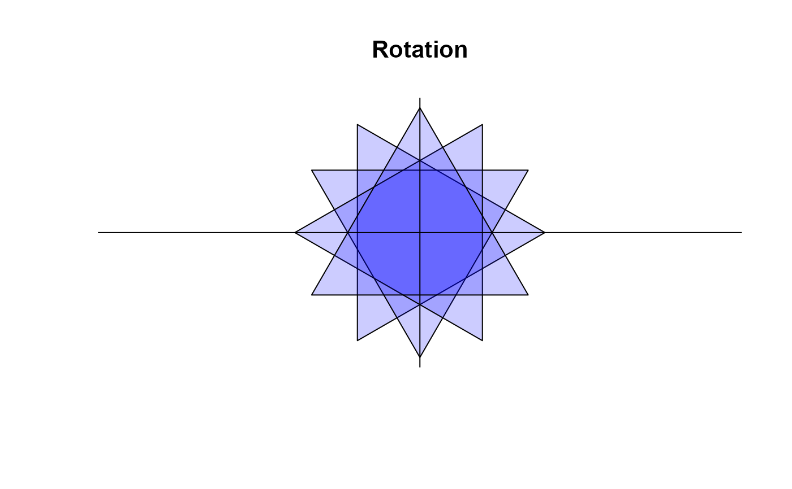

Rotate a geometric structure by an angle theta around a centerpoint xy.
Arguments
- x, y
vectors containing the coordinates of the vertices of the polygon , which has to be rotated. The coordinates can be passed in a plotting structure (a list with x and y components), a two-column matrix, .... See
xy.coords.- mx, my
xy-coordinates of the center of the rotation. If left to NULL, the centroid of the structure will be used.
- theta
angle of the rotation
- asp
the aspect ratio for the rotation. Helpful for rotate structures along an ellipse.
See also
polygon, regPolygon,
ellipse, arc
Other geometry:
arc(),
band(),
bezier(),
canvas(),
polarGrid(),
polygon(),
shade(),
transformXY()
Examples
op <- par(no.readonly = TRUE)
# let's have a triangle
canvas(main="Rotation")
x <- regPolygon(numVertices=3)
# and rotate
sapply( (0:3) * pi/6, function(theta) {
xy <- rotate( x=x, theta=theta )
polygon(xy, col=addAlpha("blue", 0.2))
} )
#> [[1]]
#> NULL
#>
#> [[2]]
#> NULL
#>
#> [[3]]
#> NULL
#>
#> [[4]]
#> NULL
#>
abline(v=0, h=0)

par(op)